दुर्गा कथा और देवी
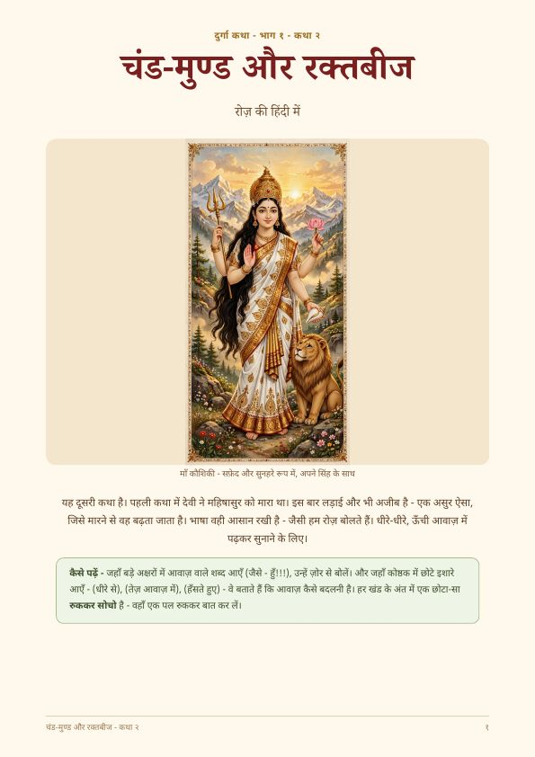
चंड-मुण्ड और रक्तबीज
चंड-मुण्ड गिरते हैं, और रक्तबीज की हर बूँद से नया असुर उठता है — जब तक काली उत्तर नहीं देतीं।
किताब पढ़ें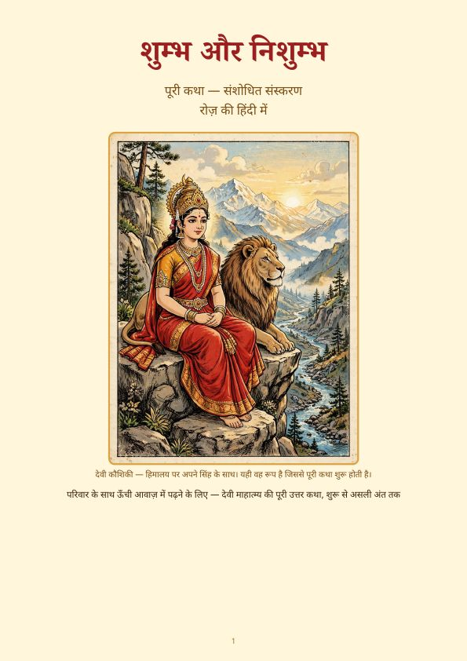
शुम्भ और निशुम्भ — पूरी कथा (संशोधित संस्करण)
पूरी कथा: कौशिकी का प्रकट होना, धूम्रलोचन, मातृकाएँ, शिवदूती, और देवी का वचन।
किताब पढ़ें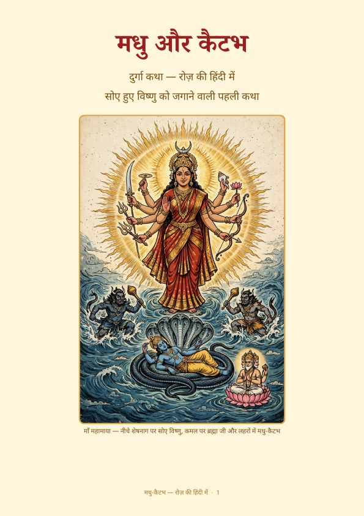
मधु-कैटभ
विष्णु के कान से दो असुर वेद चुरा लेते हैं — और महामाया प्रभु को जगाती हैं।
किताब पढ़ें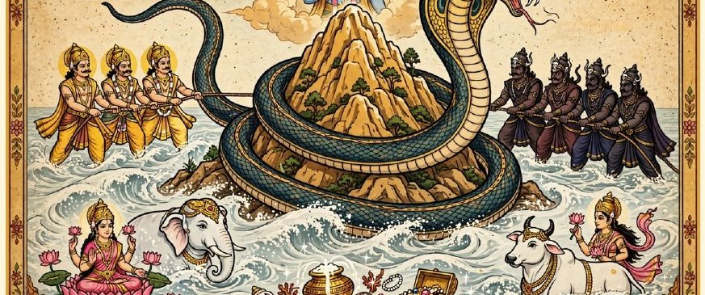
समुद्र मंथन — पूरी कथा
समुद्र का मंथन: विष, अमृत, लक्ष्मी, मोहिनी, और राहु-केतु।
किताब पढ़ेंशिव
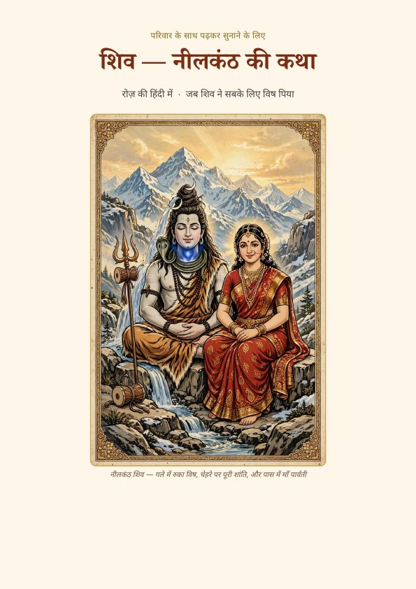
शिव — नीलकंठ की कथा
शिव संसार को बचाने के लिए हलाहल विष पीते हैं, और उनका गला नीला हो जाता है।
किताब पढ़ें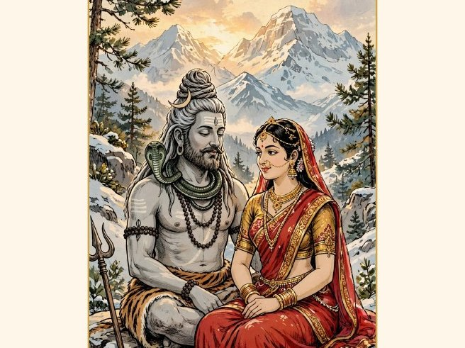
शिव–पार्वती — पूरी कथा
सती, अग्नि, वह शोक जो तभी थमा जब कुछ भी नहीं बचा — और पार्वती, जिनकी तपस्या, ज़िद और विवाह शिव को घर ले आए। कामदेव, सप्तर्षि, और कार्तिकेय का तारकासुर-वध सहित।
किताब पढ़ेंविष्णु और अवतार
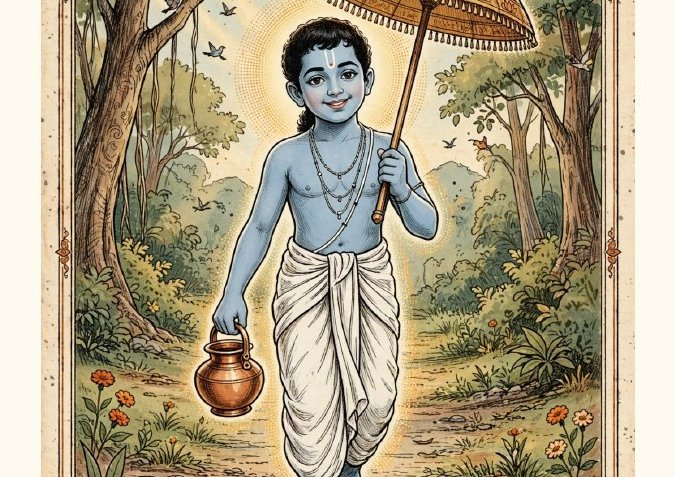
वामन अवतार और राजा बलि
तीन पग भूमि — और एक राजा जो अपना वचन निभाता है। बलि सम्मानित हैं, खलनायक नहीं।
किताब पढ़ें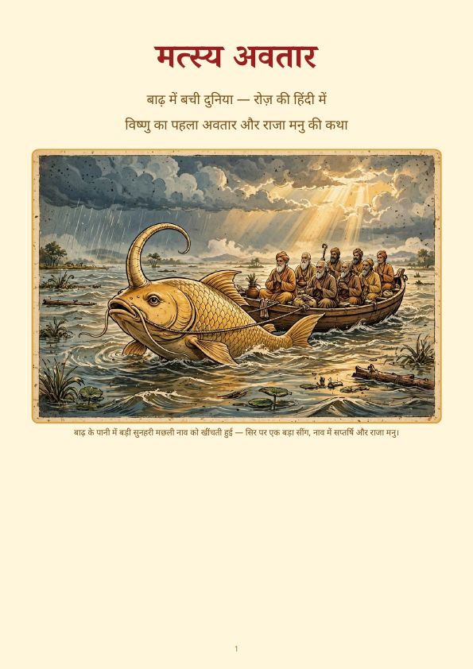
मत्स्य अवतार — बाढ़ में बची दुनिया
मनु की हथेलियों की छोटी-सी मछली दुनिया की नाव बन जाती है।
किताब पढ़ें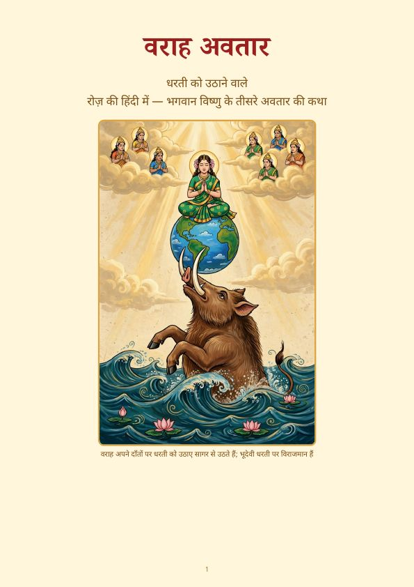
वराह अवतार — धरती को उठाने वाले
वराह जो डूबी हुई धरती को अपने दाँतों पर उठा लेते हैं।
किताब पढ़ेंपरशुराम — क्रोध और प्रतिज्ञा की कथा
राजाओं को जन्म ने नहीं, शक्ति और अहंकार ने भ्रष्ट किया — और योद्धा युवा राम के सामने झुकता है।
किताब पढ़ें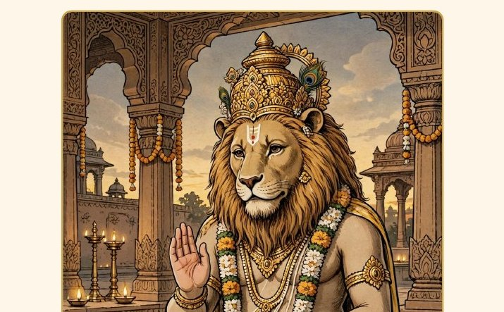
नृसिंह अवतार — भक्त प्रह्लाद की कथा
संध्या के समय खंभे से, न मनुष्य न पशु — और एक पुत्र जो अपने पिता को क्षमा करता है।
किताब पढ़ेंगुरु और मोड़
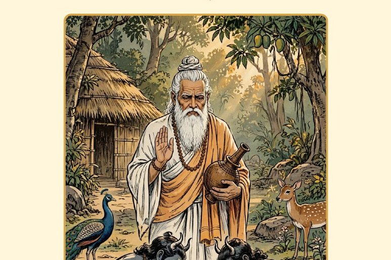
शुक्राचार्य — असुरों के गुरु, संजीवनी के ज्ञाता
वह गुरु जिन्होंने असुरों को चुना, मृतकों को जिलाने की विद्या पाई, और उसकी कीमत अपनी आँख से चुकाई।
किताब पढ़ेंत्योहार
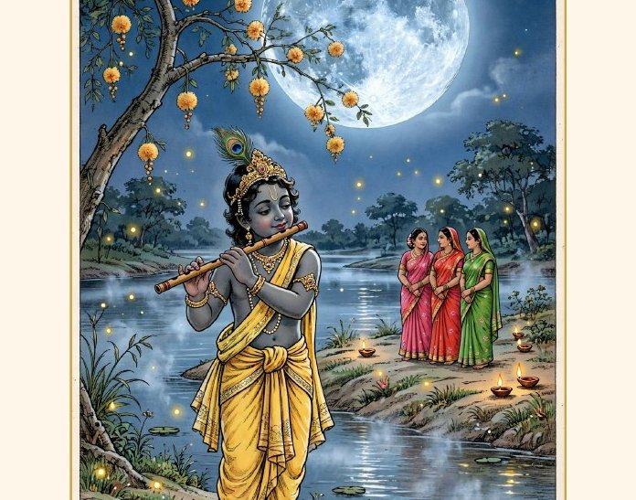
शरद पूर्णिमा — चाँद की सबसे बड़ी रात
सोलह कलाओं की रात, यमुना पर रास, और चाँदनी में रखी खीर।
किताब पढ़ें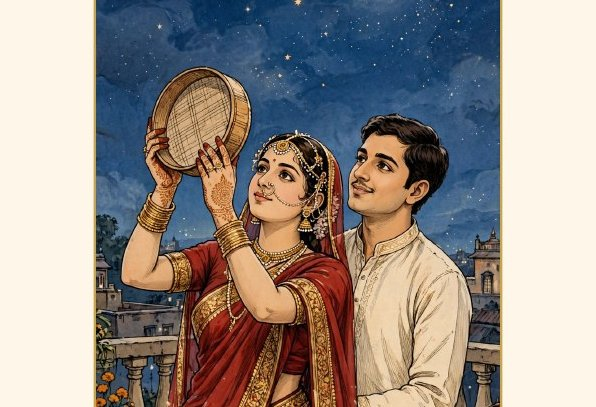
करवा चौथ — चाँद का इंतज़ार (संशोधित संस्करण)
वीरवती का पति के साथ बिताया वर्ष, अलग घर, और सच्चा चंद्रोदय।
किताब पढ़ें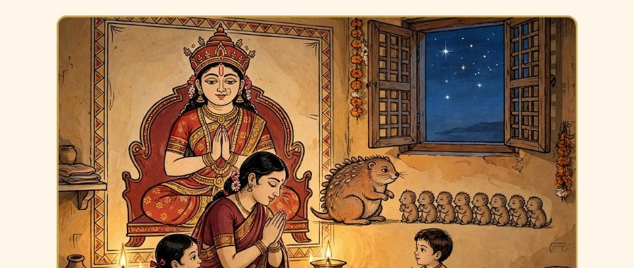
अहोई अष्टमी — नमूना अध्याय
कार्तिक त्योहार-पुस्तक का नमूना अध्याय: माँ का व्रत, एक छोटी भूल, सेवा का वर्ष, क्षमा।
किताब पढ़ेंछोटे पाठकों के लिए
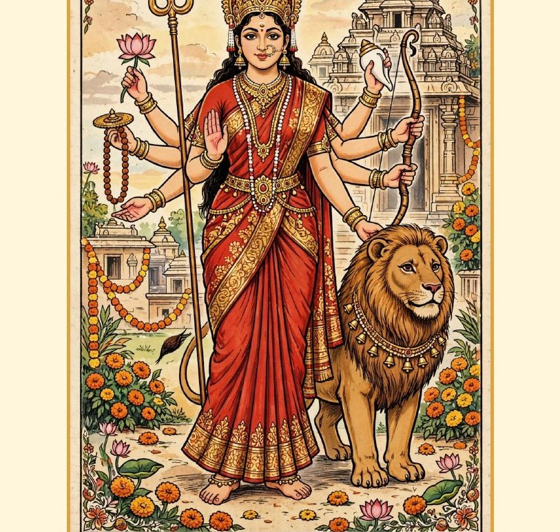
देवी दुर्गा और भैंसा असुर — छोटे पाठकों के लिए
महिषासुर, अकेले पढ़ने वाले बच्चे के लिए: छोटी पंक्तियाँ, दृष्टि-शब्द, हर रूप-बदल पर टेक, खेल और रंग भरने के पृष्ठ।
किताब पढ़ेंदेवों से पहले के भी देव
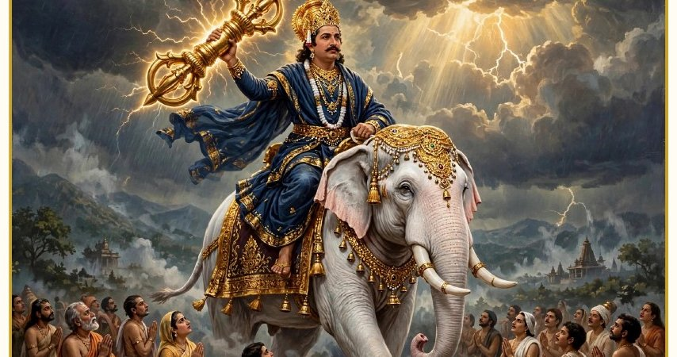
इंद्र — स्वर्ग के राजा की कहानी
पहली पुस्तक: पुराण-युग से पहले के देवता। इंद्र की उत्पत्ति, ख़ज़ाने, कर्म, दोष, महाकाव्य — और आज के इंद्र। कॉमिक-शैली का आवरण, अंदर श्रृंखला-पृष्ठ।
किताब पढ़ेंदुर्गा कथा, खंड १ — अंग्रेज़ी और हिंदी संस्करण
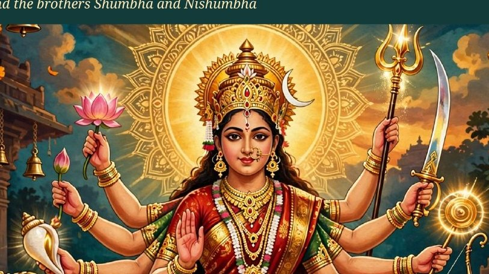
दुर्गा कथा खंड १ — कहानी-पुस्तक (अंग्रेज़ी, v2)
महिषासुर, चंड-मुण्ड और रक्तबीज, शुम्भ-निशुम्भ — कथावाचक-टिप्पणियों और ज़ोर से पढ़ने की सुविधाओं सहित।
किताब पढ़ें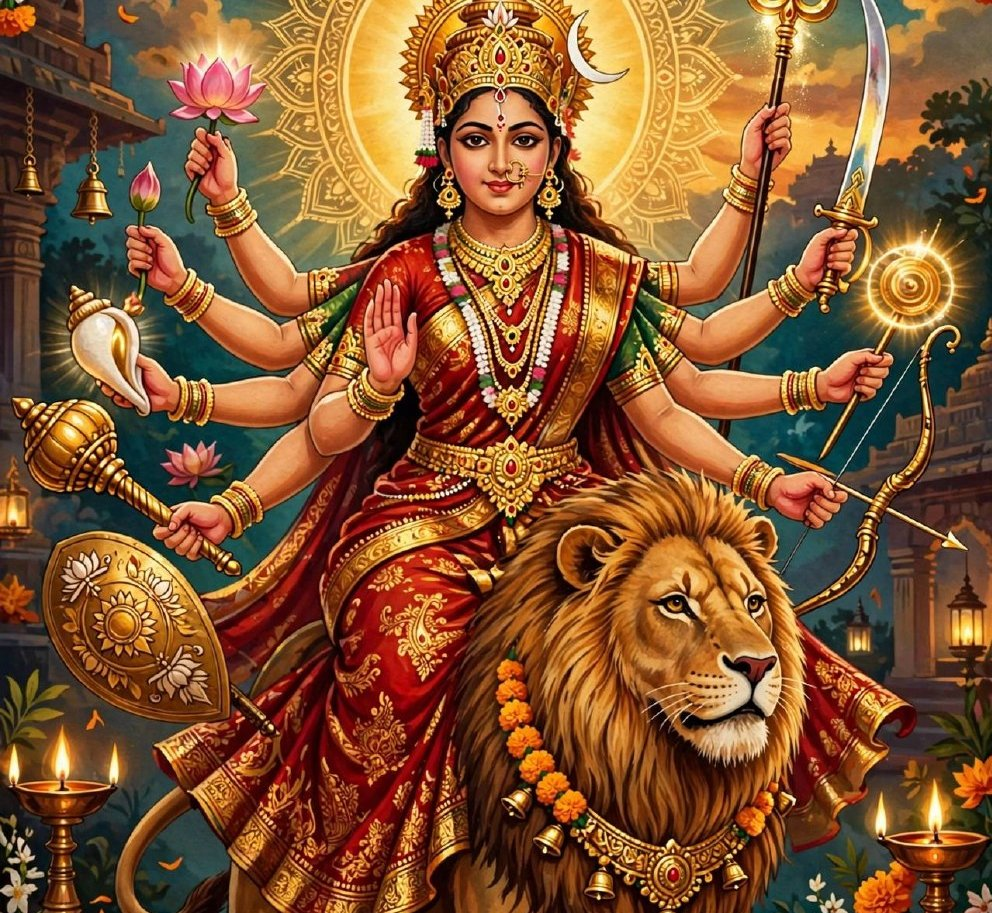
दुर्गा कथा खंड १ — कॉमिक (अंग्रेज़ी, v2)
तीन कहानियाँ कॉमिक के रूप में, अनूठी पैनल-कला के साथ।
किताब पढ़ेंआगे क्या — दिवाली सोने की कहानियाँ
हर रात एक कहानी, रोज़ की हिंदी में, हर अंत शांत — एक दीप जला, एक घर वापसी, एक वचन निभा। सिर्फ़ हिंदू त्योहार: मुख्य पाँच रातें और क्षेत्रीय शेल्फ़, एक-एक करके बन रही हैं।
रात १ — धनतेरस की रात
धन्वंतरि समुद्र से उठते हैं; हिमा के पुत्र और यम को मात देने वाले दीप; कुबेर की समृद्धि-धारा।
रात २ — नरकासुर का अंत
कृष्ण और सत्यभामा बंदियों को मुक्त करते हैं; दक्षिण की भोर वाली कथा, जहाँ यही सुबह दिवाली है।
रात ३ — अयोध्या के दीये
चौदह वर्ष बाद राम, सीता और लक्ष्मण लौटते हैं, और नगर हर द्वार पर दीप जलाता है। केंद्र-बिंदु।
रात ३ — लक्ष्मी घर आती हैं
समुद्र, स्वागत, सफ़ाई के साथ अलक्ष्मी का विदा होना, और पूजा-रात की व्रत कथा।
रात ४ — गोवर्धन
कृष्ण सात दिन तक पहाड़ उठाते हैं, और इंद्र का अभिमान वर्षा में धुल जाता है।
रात ४ — बलि का आगमन
वचन निभाने वाला राजा अपनी प्रजा के पास लौटता है, अंत में नववर्ष की परंपराएँ: बलि पाड्यमी, बेस्तु वरस, चोपड़ा पूजन।
रात ५ — भाई दूज
यम यमुना से मिलने आते हैं — तिलक, भोजन, वचन — साथ में चित्रगुप्त और उनकी बही की धारा।
क्षेत्रीय शेल्फ़ — काली पूजा की रात (बंगाल)
बंगाल की दिवाली: नृत्य करती काली, उनके पैरों तले शिव, अंधकार और प्रकाश में बदली रात।
क्षेत्रीय शेल्फ़ — तिहार के पशु-मित्र (नेपाल)
नेपाल के पाँच दिन कौए, कुत्ते और गाय के माध्यम से — दीपों से पहले यम के दूतों का सम्मान।
और भी
बाक़ी कार्तिक त्योहार, अग्नि (देवों से पहले के भी देव, दूसरी पुस्तक), गणेश, कार्तिकेय, राम और कृष्ण की कथाएँ, और समुद्र मंथन का पूरा अंत।